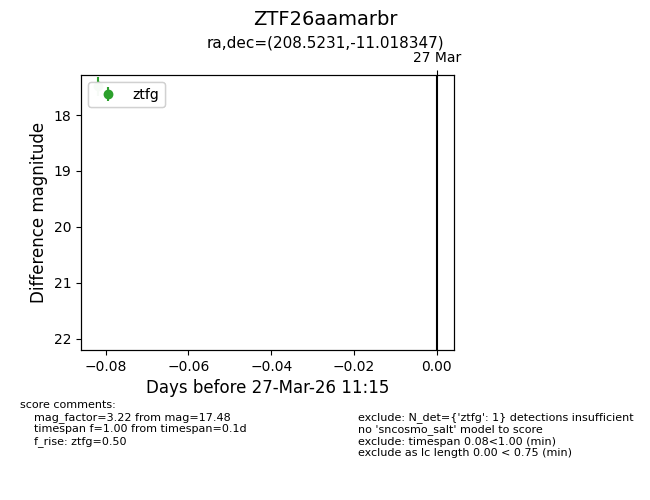
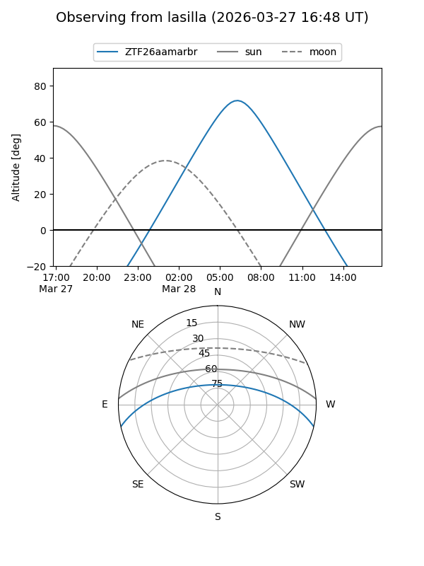
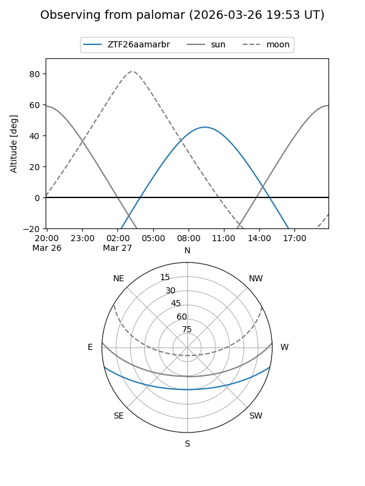

ZTF26aamarbr
Target ZTF26aamarbr at 2026-03-27 11:18
Aliases and brokers:
FINK: link
Lasair: link
ALeRCE: link
alt names
ZTF26aamarbr (ztf,fink_ztf)
Coordinates:
equatorial (ra, dec) = 208.5231,-11.01835
equatorial (HMS+DMS) = 13:54:05.54,-11:01:06.05
galactic (l, b) = (326.7252,+48.93729)
Flags:
Photometry:
last ztfg=17.48
1 ztfg detections
Lightcurve

Visibility


Additional plots